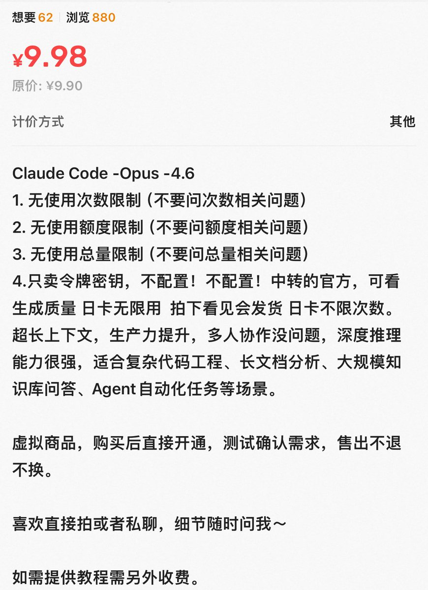
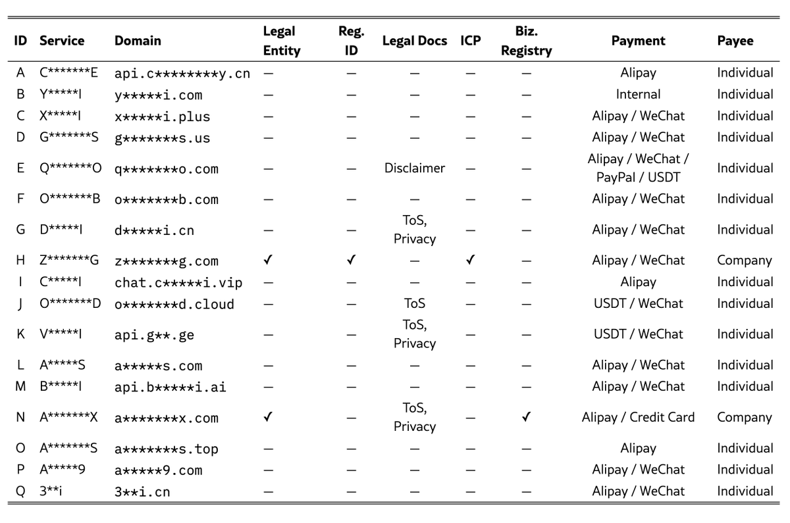

这些API上游大概率是公益站接过来的负载均衡，空手套白狼。免费的公益站还好，像闲鱼上这种“无限额度”可要小心了！真有能力10块钱无限额度，就算只有一小时质保也能烧掉不少token了，更何况还是大量的卖，只能是某些成本及其低甚至零成本的渠道了！
有些是套的赠金Kiro的Power的号，基本上只能存活一天，两天血赚，所以额度很高，约等于无限。不过也有套壳模型，用些什么免费的小模型（qwen或者glm）让你无限用得了。
或者上游是其他中转站或者公益站的，如果商家承诺质保1小时，给你限速再掺假，然后你用不了几刀，过了1小时立刻给你封了
除非你能确定渠道来源，否则少做梦！深度思考一下，要是真没问题的话，Claude都得来咸鱼进货🤣🤣🤣

有些是套的赠金Kiro的Power的号，基本上只能存活一天，两天血赚，所以额度很高，约等于无限。不过也有套壳模型，用些什么免费的小模型（qwen或者glm）让你无限用得了。
或者上游是其他中转站或者公益站的，如果商家承诺质保1小时，给你限速再掺假，然后你用不了几刀，过了1小时立刻给你封了
除非你能确定渠道来源，否则少做梦！深度思考一下，要是真没问题的话，Claude都得来咸鱼进货🤣🤣🤣


近半数AI中转站是假的！
这个论文研究了在187 篇论文中使用过的17个AI API中转站，通过多种方式识别是否是标称的真实模型，结果近半数无法通过测试......
可惜论文中对这17个中转站做了匿名，如下图
https://t.co/6NxQOOYzjD https://t.co/EaGMJ0YcW7
这个论文研究了在187 篇论文中使用过的17个AI API中转站，通过多种方式识别是否是标称的真实模型，结果近半数无法通过测试......
可惜论文中对这17个中转站做了匿名，如下图
https://t.co/6NxQOOYzjD https://t.co/EaGMJ0YcW7